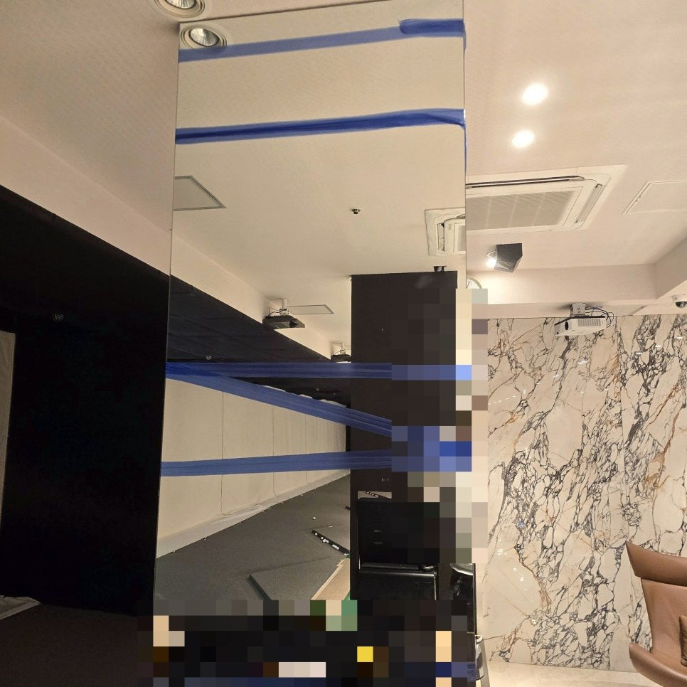
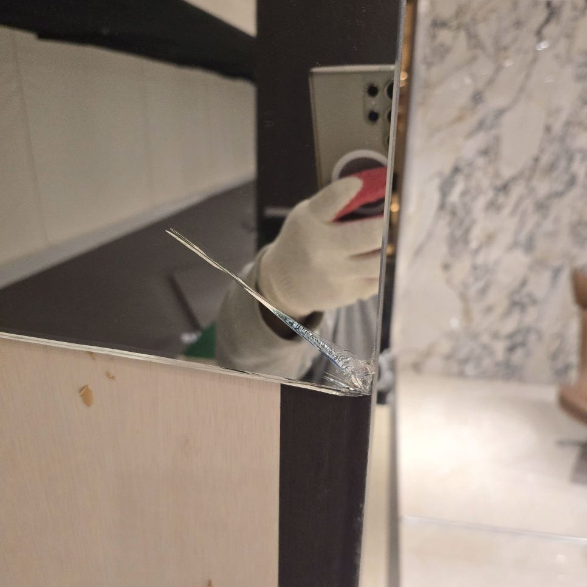
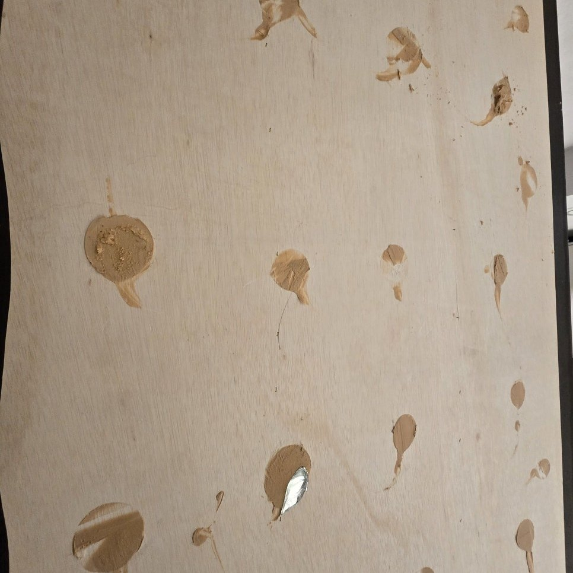

거울 수리 문의 가운데 가장 서둘러야 하는 경우가 영업 중인 매장의 깨진 벽거울입니다. 영등포구 문래동의 한 스크린골프장은 8번 타석 옆 칸막이 거울이 골프채에 맞아 금이 갔고, 저희는 남은 조각을 차례로 걷어 낸 다음 원래와 같은 5T 거울(700×2100mm)로 그 자리를 다시 채웠습니다.
한눈에 보기
| 작업 | 깨진 벽거울 철거 후 새 거울 부착 |
|---|---|
| 지역 | 서울 영등포구 문래동 |
| 장소 | 스크린골프장 8번 타석 옆 칸막이 |
| 새 거울 | 5T(5mm), 가로 700mm × 세로 2100mm, 약 16자 |
| 깨진 이유 | 손님 백스윙 때 골프채 끝이 닿음 |
| 현장 준비 | 사다리, 타석 보양 시트, 청소기 |




골프 매장 거울파손은 왜 타석 옆에서 생기나요?
타석 바로 옆 칸막이는 스윙이 지나가는 반경과 가깝습니다. 이번에는 손님이 채를 뒤로 크게 넘기다 끝부분이 칸막이 거울을 때렸습니다.
다행히 매장에서 파란 테이프를 가로와 대각선으로 여러 겹 둘러 두어서, 저희가 도착했을 때까지 조각이 흘러내리지 않았습니다. 벽거울에 금이 갔다면 이렇게 묶어 두는 것이 첫 번째 응급 처치입니다.
금 간 거울을 떼고 다시 붙이는 순서
- 타석 인조잔디 위에 파란 보양 시트를 넓게 깔아 떨어지는 조각을 받을 준비를 했습니다.
- 세로 2100mm 거울 윗변이 천장 가까이 있어 사다리를 세우고 꼭대기부터 손을 댔습니다.
- 장갑을 낀 채 테이프로 묶인 상태 그대로 한 조각씩 떼어 냈습니다. 한꺼번에 당기면 금 간 부분이 쏟아질 수 있기 때문입니다.
- 거울이 빠진 자리의 합판에는 예전 접착제가 동그랗게 굳어 줄지어 있었고, 새 거울이 들뜨지 않도록 이 바탕 상태부터 확인했습니다.
- 5T 700×2100mm 새 거울을 붙여 윗변을 검은 칸막이 틀에 맞췄습니다.
- 인조잔디와 매트 틈에 숨은 잔 유리 가루까지 청소기로 훑어 마무리했습니다.
거울 수리 때 두께는 원래 거울과 꼭 맞춰야 하나요?
네, 맞추는 편이 좋습니다. 칸막이마다 거울이 나란히 붙어 있는 매장은 한 장만 두께가 달라도 옆면과 높이가 어긋나 보입니다.
벽에 붙이는 거울은 5T를 흔히 쓰고, 이 현장도 기존과 똑같은 5T로 골랐습니다. 다시 붙인 뒤 타석에서 보면 칸막이 한 면이 깨지기 전처럼 거울로 채워져 있습니다.
거울 수리 비용은 어떻게 정해지나요?
기준은 새로 붙이는 거울의 넓이입니다. 1자(30×30cm)에 6천~1만 원으로 보고, 700×2100mm는 약 16자라 거울값만 10만~16만 원 안팎입니다.
여기에 이 현장처럼 천장 가까운 높이, 영업 매장의 보양과 청소, 접착 자국이 남은 바탕 같은 조건이 붙습니다. 한 장만 맡기시는 경우에는 최소 시공 가격이 적용될 수 있습니다.
자주 묻는 질문
- Q. 벽거울이 깨졌는데 기사님 오기 전에 뭘 해 두면 되나요?
- 넓은 테이프를 가로와 대각선으로 여러 줄 붙여 조각이 떨어지지 않게 묶어 두시면 됩니다. 손으로 직접 떼어 내지는 마시고, 거울 아래로 사람이 다니지 않게만 해 주세요.
- Q. 거울 한 장만 바꿔도 출장이 되나요?
- 됩니다. 서울·경기·인천 어디든 갑니다. 다만 한 장 작업은 최소 시공 가격이 적용될 수 있어서 사진을 보고 미리 안내해 드립니다.